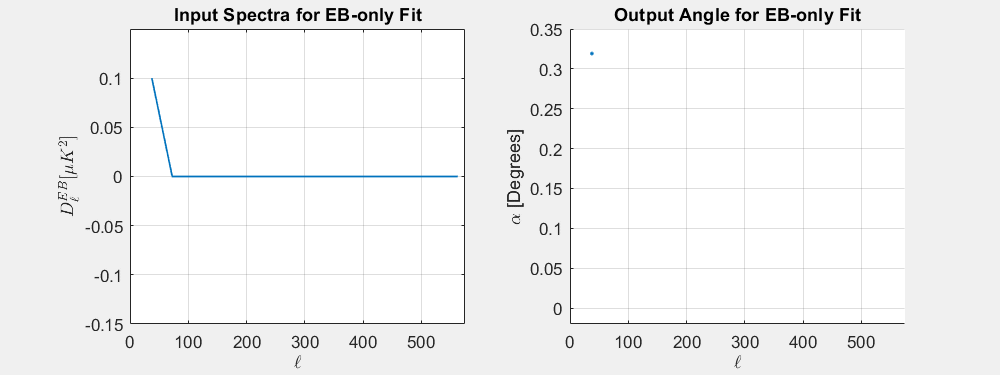

In a previous posting , I characterized the uncertainty in global polarization estimates for BICEP3 B2018 sims which are expected to have a mean angle of 0°. This is a follow-up to that posting which now includes fits to the B18 3-year dataset and I compare angle fits to B18 to B2018. I then investigate how each bandpower is weighted by the angle estimator. Lastly, I explore a bit more how the variance on our angle estimates and BB-power relate to each other.
Matrix purifying B18 Sims
I've now included B18 into these pagers. I am also now crossing Unlensed LCDM T&E with B of Dust-only and Noise-only signal types so that our angle estimates for these signal types are comparable to the ones with CMB already in them.
These spectra can be seen in the "cmb x noise/dust" option where EB, TB, and BB are all now ECMB×BNoise/Dust , TCMB×BNoise/Dust , BCMB×BNoise/Dust respectively.
B18 - the ensemble of 499 B18 sims created for the BK18 analysis (i.e. sernum: 3553, daughter: fgh)
B2018 - the ensemble of 499 B2018 sims created for the BK18 analysis (i.e. sernum: 3553, daughter: h)
B2018-rerun - An ensemble of 10 B2018 sims I ran myself (sernum: 6600, daughter: h).
A pager of EB/TB APS of my 10 sims compared to the 499 sims generated for B2018. The gray lines indicate one realization and the black line indicates the mean of all realizations per-ell.
I see a ~20% reduction in the B18 and B2018 matrix-purified Unlensed-LCDM BB spectra. Below I show the angle estimates now including crosses of CMB with Dust/Noise. As in my previous posting, I fit angles using only our standard ℓ-bins of 2 through 10 (out of 17).
Histograms of α estimates for B2018 and my B2018-rerun for each EB/TB fit type; per signal type; and with and without matrix purification.
Histograms of α estimates for B2018 and my B2018-rerun for each EB/TB fit type; per signal type; and with and without matrix purification.
Switching between B18 and B2018 for any signal type which has noise, we can qualitatively see that integrating over three years versus one reduces the σα as expected. Quantitatively though, we can calculate the effective number of additional years we integrated over by taking the ratio of the variances on α:
The Nyears~2.6 for Noise-only which is close to what I get when I compare the B2018 survey weight to B18 according to the CMB Pol Expt Comparison Sheet which is 552836/219441 = 2.52.
We can also see that for B18, the means of the angles are still large compared to the error-on-the-mean, which disfavors the hypothesis in which the deviations were due to systematics resulting from using the B18 matrix on the B2018 subset. The next step is to test the other hypothesis where these deviations are due to the fact that we're using constrained T-maps.
Plots of the Mean divided the error on the mean as a function of each signal for cases with and without matrix purification.
We can then difference model expectation values \(\rCb^{XY}\) from the
real bandpowers \(\oCb^{XY}\) (where the subscript \(b\) denotes binned
bandpowers over a range in \(\ell\)) and calculate the \(χ^2\) values
making use of the bandpower covariance matrix \(\Ccov^{XY}\) for a
given cross-spectrum \(XY\):
Assuming the above is linear for small values of α (which should be true given the small-angle approximation), we can create a linear estimator, $\hat{\alpha}_{lin}$, in which α is the dot product between the our array of bandpowers $C_{b}^{XY}$ and some vector that contains the information how each bandpower contributes to α
I calculate $\partial\alpha\,/\,\partial C_{b}^{XY}$ by injecting a quasi-delta function -- i.e. setting a bandpower to some fixed amplitude whilst keeping all other bandpowers at zero -- into an EB or TB spectra ℓbin-by-ℓbin, recording the resulting alpha estimates from the χ2-estimator (see below figure for example). I fit angles to these fake spectra using the same procedure outlined in where, I substitute the real data in B2018's final file for these fake spectra and then pass that final file through reduc_global_rotation.m. This means that I'm also using B2018's BPCM.

The figure below shows resulting alphas for four different amplitudes of our quasi-delta function. Through my analysis so far, I have been using our standard ℓ-bins 2-10 but I now also include a case for using ℓ-bins 2-15.
Exploring the effect on α for input delta functions for EB (Top Row) and TB (Bottom
Row). Left Column Resulting α estimate per bandpower as a function of Ell, the lines are color coded by the amplitude of the quasi-delta function used in the given spectra. (Right Column) The angle at each bandpower is divided by the bandpower itself which creates the linear estimator. Since all four cases overlap, this is also a proof of linearity for this range of bandpowers.
Constraining power vs. ℓ
This shows the constraining power of the spectra as a function of ℓ-bin. Smaller values indicate higher constraining power. As such, we can expect our highest constraining power for EB to be around bins 10-12, while TB is around bins 4-6 and 8-11.
Comparing uncertainty estimates
I determine σα by taking the dot product of $\partial\alpha\,/\,\partial C_{b}^{XY}$ and the standard deviation per-bandpower across all sims in the B18 simset.
Left plots show the contribution of σα per-bandpower for EB and TB from the linear estimator. The right plot compares the σα between the linear and chi-squared estimator.
Comparing α estimates
Each dot represents a single realization from B18. α along the y-axis is calculated by taking the dot product of dα/dDℓ in the right plots of Fig 2.2 with their respective band powers.
Looking into the $\hat{\alpha}_\chi$ Covariance Matrix
As mentioned before reduc_global_rotation estimates an angle by minimizing the equation below
Where $\Ccov^{XY}$ in this case is the EBEB or the TBTB covariance matrix.
First, since the code also allows for estimating α with EB+TB, I had assumed the above equation would be extended in such a way which considers the TBEB and TBEB cross-covariance in the full bandpower covariance matrix.
If we use $\Ccov$ to describe the full bandpower covariance matrix between EB and TB with submatrices $\Ccov^{XY}$, I expected the covariance in the estimator to look like
which would be taken directly from the final file's given bandpower covariance matrix. Instead, the the code recalculates the bandpower covariance for just TBTB and EBEB doesn't actually include the cross-covariance between the two:
\begin{equation}
\Ccov =
\begin{bmatrix}
\Ccov^{TBTB} & O \\
O & \Ccov^{EBEB} \\
\end{bmatrix}
\end{equation}
Second, like our actual BPCM, the coavriance matrix above is calculated from the final file's final.r.sim variable which are the 499 noise-debiased Type-7 sims (i.e. Lensed-LCDM+Noise-mean(Noise)) -- reduc_final.m states that this debiasing is done for all spectra, not just BB.
I re-fit alpha to the B18, B2018, and B2018-rerun sims now using the full bandpower covariance matrix calculated from Lensed-LCDM+Noise+Dust. To show the effects of only changing one thing at a time, in the pager below, the first "Full Cov." option uses the full, original covariance matrix (Noise-debiased L-LCDM+Noise). The "Full Cov. from Type 8" option uses the full covariance matrix recalculated from L-LDCM+Noise+Dust without debiasing.
Lastly, Justin points out in this posting that he truncates the covariance matrix to keep only up to the 2nd off-diagonal terms which is the default choice in the code. While not stated explicitly, I assume this choice is made because he didn't trust the covariance matrix to be a 100% match of the covariance on the real data. Because I have been using this default choice, I include an option to choose between using all off-diagonal terms or just the default of 2.
Histograms of α estimates for B2018 and my B2018-rerun for each EB/TB fit type; per signal type; and with and without matrix purification.
Including the covariance information between EB and TB, the fit to EB+TB does appear to being EB+TB closer to EB-only, but it's still higher than EB-only.
Conclusions
In my previous posting, we saw deviations in the means of α that were large WRT their error-on-the-means. By fitting angles to B18, I was able to rule out systematics involving the purification matrix as the source which drives us to look into ways of testing the hypothesis that these deviations are a result from using constrained T-maps.
By fitting angles to EB/TB with CMB crossed Noise/Dust, the angles that I fit to these signal types are now comparable to the other signal types with CMB in them. I find that the Noise σα between B2018 and B18 drops by ~√3 as expected. This is not true, however, for L-LCDM+Noise or L-LCDM+N+Dust because we're now in the regime where the contributions to σα from lensing and noise are comparable.
I also examined how each bandpower contributes to our angle estimates and find that most of our constraining power is in the higher-ℓ's. For all of my angle fits up through now I have been only using ℓ-bins between 2 and 10 (ℓ=37.5 to 317.5), but because the BB-power in our real data is less understood at higher ℓ's, I'm thinking of sticking to this ℓ-bin range. According to the fits in Fig 2.4, most of our constraining power in this region is between ℓ-bins of 6 to 10, but we do see a non-trivial improvement of σα of ~0.01° by including bands 2 through 5, so I'm electing to keep using those as well.
I was able to show that the sum of the BB-power and the variance on α of the L-LCDM, Noise and Dust signal types are equal to the BB-power and σα2 of coadded maps of the signal types. This relationship should prove useful both when looking at fits of other simulations further on in the analysis and when forcasting the performance of future analyses.
Lastly, I was able to show that if we include two more years of data, our constraint would start to be dominated by the lensing signal instead of noise.
Next Steps
Running pseudosims through the angle estimator explore how EB and TB are related
Fitting angles to sims with non-zero angles injected into them.